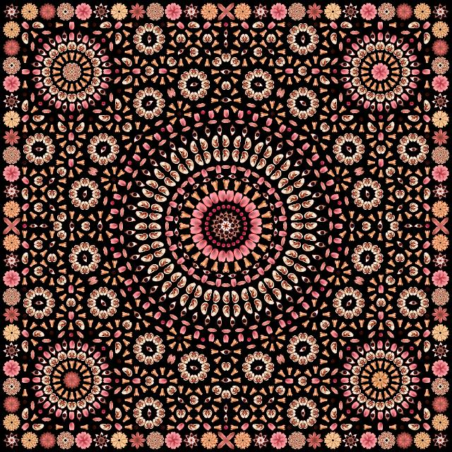

Patterns exist on the streets we walk, on the walls we see from bed, on the blankets that cover us, on the clothes we wear, and more. They are so deeply integrated into various aspects of life and the familiar places we often overlook their presence. This research aims to explore patterns that have been intertwined with us for a long time, and discover its own significance.
Patterns are essentially repetitions of motifs, and motifs encompass various forms. Some are based on real-life elements such as flowers, leaves, animal skins, etc, while others are abstract, allowing designers to express their subjective perspectives and creative sensibilities. Some patterns are symbolic, taking simplifying or exaggerating forms, — paisley, Seigaiha, Suzani, and etc. However, the same motif can hold completely opposite meanings depending on the era or cultural context. Further examples will follow in the subsequent chapters.
In the following two chapters, patterns that I look into are geometric patterns. Geometric patterns refer to designs that use geometric figures — straight lines, curves, circles, triangles, squares, etc. The word 'geometry' is derived from two Greek words, namely γη, gē, which means earth, and μετρον, metron, which means measure.1 Holme, 2002, pp.27-65. In this thesis, I focus on dotted and striped patterns as representative examples. The circular and linear motifs, in particular, have carried different meanings across various historical and cultural contexts
Language of Circle — Dotted Pattern
A dotted pattern is exactly what it means: a pattern in the form of repeated circular motifs, usually composed on a solid background. It is commonly referred to as POLKA DOT pattern. Polka dots are said to have originated from the name of Czech dance in the 1830s. While this dance quickly spread throughout Europe, by 1844, James K. Polk was campaigning for the U.S. presidency.2 Cheney Brothers, 1918. The similarity of names "Polka" and "Polk" piqued the curiosity and soon gained popularity in the United States. The popularity of the polka was explosive.3 Cheney Brothers, 1918. Not only the Dot pattern was named after Polka, but merchants promoted products named after polka, such as polka pudding, polka curtains, and polka hats.4 Cheney Brothers, 1918. While the direct connection between dotted patterns and the dance remains unclear, Jude Stewart interpreted that “possibly the spotted pattern evoked the lively half-step of the dance.”5 Stewart, 2015.
Figure 1. Ms. America Norma Smallwood, 1926.
In the early 20th century, polka dots experienced another heyday in the United States. It is because of releasing the song Polka Dots and Moonbeams by Frank Sinatra and bathing costume worn by Norma Smallwood, who crowned Miss America in 1926. "You can sign your fashion life away on the polka-dotted line, and you'll never regret it this season," the Los Angeles Times remarked in spring 1940.6 Weaver, 1940. In 1943, The Washington Post featured Jeanne Contini explaining polka dot as: “What we mean by a print with social significance is one that most people can wear most of the time. The whole family of polka dots falls into that category even if they don't spell 'Remember Pearl Harbor' in code. The full-grown variety in particular makes a clean-cut monotone pattern that is neither dizzy nor monotonous. It is as good in a close-up as it is in perspective and manages to be in pleasing proportion to all kinds of figures. It requires no more than a casual acquaintance with the cleaner.”7 Contini, 1943.
The repetition of this simple shape became the pattern of American democratic values and an expression of brightness and joy. Perhaps— the dot, the edgeless figure, would have given the viewer a friendly and playful impression, and the repetition of the motif would have formed a sense of rhythm, further enhancing their visual appeal.
However, in the Middle Ages of Europe(approximately from the 5th to the late 15th centuries), this pattern had a completely different meaning. Fabrics adorned with dotted patterns were practically considered taboo.8 Stewart, 2015. With the technology of the time, it was not only impossible to print perfect circles but even to arrange them evenly.9 Stewart, 2015. p.30. The irregular repetition of imperfect circle motifs was reminiscent of the rash of infectious diseases or the bloodstains caused by tuberculosis, which were fatal at the time when medicine was incomplete. Steven Connor, professor of English and cultural historian at the University of Cambridge, explains: “Irregularly spotted fabrics are ominous not just because they are reminiscent of blemishes on the skin, but also because they are uncomfortable reminders of the ominous markings of other fabrics: the blood in the handkerchief that was a traditional sign of tuberculosis, and the 'spotting'... which may presage a miscarriage in early pregnancy. Desdemona's strawberry-spotted handkerchief, which leads to such disasters in Othello, joins together the associations of disease, deception, lust and corruption.”10 Connor, 2003, pp.49-63.
Figure 2. Anne de La Grange-Trianon, François-Hubert Drouais, 18th century.
Yet ironically, dot motif, which are reminiscent of these diseases, have also been used to cover the scars of diseases. From the 1950s to the 1720s, a trend called "patching" existed among European women.11 Paul, 2024. It means cutting a black cloth and attaching it to your face to make a mole, also often called a Moucheron. It served to cover skin defects, especially scars like smallpox marks, or to emphasize flawless white skin.12 Paul, 2024. The main reason it gained popularity was its role in reading fate based on the dot's position or serving as a secret language to express one's opinions.13Oatman-Stanford, 2017.
Figure 3. 김환기, 어디서 무엇이 되어 다시 만나랴(Where, in What Form,Shall We Meet Again?), 1970.
Thus, even identical circular forms can take on entirely different meanings depending on their time of emergence, color, placement, and the number of repeated dot. In Korea, there is a work where each repeated dot carries its own significance—Kim Whanki’s 'Where, in What Form, Shall We Meet Again?’ (Figure 3.) He expressed his longing for his homeland by covering his canvases with countless dots. “I have been placing these dots the day before yesterday, yesterday, and today. Tens of thousands of things—the deceased, the living, the flowing river, the mountains I once climbed, stones, blades of grass, flower petals... As I think of these countless things, I contemplate an unknown future, and continue height: 0.5rem; to place each dot.”14김환기, 2019. Each of the innumerable dots on his canvas carries the solitude and wandering of an artist living in a foreign land, imbued with longing memories and emotions for his distant homeland.
Figure 2. Anne de La Grange-Trianon, François-Hubert Drouais, 18th century.
Figure 3. 김환기, 어디서 무엇이 되어 다시 만나랴(Where, in What Form,Shall We Meet Again?), 1970.
Yet ironically, dot motif, which are reminiscent of these diseases, have also been used to cover the scars of diseases. From the 1950s to the 1720s, a trend called "patching" existed among European women.11 Paul, 2024. It means cutting a black cloth and attaching it to your face to make a mole, also often called a Moucheron. It served to cover skin defects, especially scars like smallpox marks, or to emphasize flawless white skin.12 Paul, 2024. The main reason it gained popularity was its role in reading fate based on the dot's position or serving as a secret language to express one's opinions.13Oatman-Stanford, 2017.
Thus, even identical circular forms can take on entirely different meanings depending on their time of emergence, color, placement, and the number of repeated dot. In Korea, there is a work where each repeated dot carries its own significance—Kim Whanki’s 'Where, in What Form, Shall We Meet Again?’ (Figure 3.) He expressed his longing for his homeland by covering his canvases with countless dots. “I have been placing these dots the day before yesterday, yesterday, and today. Tens of thousands of things—the deceased, the living, the flowing river, the mountains I once climbed, stones, blades of grass, flower petals... As I think of these countless things, I contemplate an unknown future, and continue to place each dot.”14김환기, 2019. Each of the innumerable dots on his canvas carries the solitude and wandering of an artist living in a foreign land, imbued with longing memories and emotions for his distant homeland.
Language of Line — Stripe Pattern
What is the first thing that comes to mind when you think of stripes? A national flag? A clown's costume? A crosswalk? Stripes typically refer to a pattern in which parallel lines—horizontal, vertical, or diagonal—are repeated at regular intervals. While commonly found in textiles, particularly in clothing, their striking contrast makes them a powerful visual element used to decorate walls and floors in architectural spaces or serve as design focal points.15Pastoureau, 2001. pp.80-86 Stripes are also employed as crucial visual markers in society, such as on crosswalks and traffic signs, where immediate recognition is essential.16Pastoureau, 2001. pp.84-85
Art historian Michel Pastoureau, in his book Devil's Cloth: A History of Stripes, describes the diverse nature of stripes, categorizing them in “good(signs of celebrations, exoticism, or freedom), diabolic (those by which prisoners in the death camps were ignominiously marked) or dangerous (those used for traffic signs and signals, for example), hygienic (those on sheets and underwear), playful (those used for children's things), athletic (those used for leisure and sports clothes), or emblematic (those on uniforms, insignia, and flags).”17Pastoureau, 2001. pp.4-5 As such, stripes have carried a wide range of meanings, evolving through history and cultural shifts to play various roles in visual and symbolic communication.
In Medieval Europe, while dot motifs symbolized infectious diseases, stripes were used to mark those who were socially excluded. The nineteenth chapter of Leviticus proclaims in verse 19: Veste, quae ex duobus texta est, non indueris—“You will not wear upon yourself a garment that is made of two…”. The exact meaning of duobus remains ambiguous. It is unclear whether this refers to different types of fibers, contrasting colors—possibly implying stripes—or something else entirely. Even among modern scholars, interpretations vary.18Pastoureau, 2001. pp.7-11 Medieval biblical commentators and clergy favored the latter interpretation, viewing it as a prohibition against certain forms of decoration or color combinations.19Pastoureau, 2001. pp.7-11 On that Basis, in 1295, Pope Boniface VIII officially declared a complete ban on striped monastic garments for all religious orders.20Pastoureau, 2001. pp.7-11
Fig 4. Prisoners in uniform, inside a Civil prison camp, in Republican Spain during the Spanish Civil War, Photo by Universal History Archive/Universal Images Group via Getty Images.
Perhaps due to this long-standing negative perception, laws, customs, and regulations emerged that required certain criminals and outcasts to wear striped clothing. The Sachsenspiegel, a legal code compiled between 1220 and 1235, designated such attire for illegitimate children, serfs, and criminals—or restricted it to them alone.21J. Martin and A. Nitschke, 1986, p. 492. Likewise, in the book The Devil's Cloth: A History of Stripes said that "in the sumptuary laws and the decrees concerning dress that proliferated in the towns of southern Europe at the end of the Middle Ages, it is sometimes the prostitutes, sometimes the jugglers and clowns, sometimes the hangmen who are required to wear either an entirely striped suit of clothing or, more often, an item of striped clothing: a scarf, dress, or aglet for prostitutes; breeches or hoods for hangmen; doublets or hats for the jugglers and clowns.”22Pastoureau, 2001, p.13. Furthermore, in Germany, lepers, cripples, "bohemians," heretics, and sometimes, but more rarely, Jews and all those who are not Christian were also required to wear such clothing.23J. Bumke, vol. 1 (Munich, 1987), pp. 172-210; and vol. 2, pp. 821-23.
The striped uniforms assigned to prisoners not only effectively distinguished them from others—such as non-criminals and prison guards—but also served as a deterrent in cases of escape. Some theories suggest that the horizontal stripes of prison garments, when visually intersected with the vertically aligned prison bars, created a psychological impression of entrapment, reinforcing the notion that escape was impossible.24Stewart, 2015, p.48 "The horizontal stripes of black and white, applied in such broad widths, appear vulgar and brash—something undignified imposed upon the wearer," write Mark Hampshire and Keith Stephenson in Communicating with Pattern: Stripes.25Hampshire, 2006. However, the use of black-and-white striped prison uniforms declined sharply in the late 20th century,26Pratt, 2002, p. 76 as the intersecting colors evoked associations with extreme acts of violence and oppression, such as the uniforms of Chain Gangs or Nazi concentration camps.
Fig 4. Prisoners in uniform, inside a Civil prison camp, in Republican Spain during the Spanish Civil War, Photo by Universal History Archive/Universal Images Group via Getty Images.
Perhaps due to this long-standing negative perception, laws, customs, and regulations emerged that required certain criminals and outcasts to wear striped clothing. The Sachsenspiegel, a legal code compiled between 1220 and 1235, designated such attire for illegitimate children, serfs, and criminals—or restricted it to them alone.21J. Martin and A. Nitschke, 1986, p. 492. Likewise, in the book The Devil's Cloth: A History of Stripes said that "in the sumptuary laws and the decrees concerning dress that proliferated in the towns of southern Europe at the end of the Middle Ages, it is sometimes the prostitutes, sometimes the jugglers and clowns, sometimes the hangmen who are required to wear either an entirely striped suit of clothing or, more often, an item of striped clothing: a scarf, dress, or aglet for prostitutes; breeches or hoods for hangmen; doublets or hats for the jugglers and clowns.”22Pastoureau, 2001, p.13. Furthermore, in Germany, lepers, cripples, "bohemians," heretics, and sometimes, but more rarely, Jews and all those who are not Christian were also required to wear such clothing.23J. Bumke, vol. 1 (Munich, 1987), pp. 172-210; and vol. 2, pp. 821-23.
The striped uniforms assigned to prisoners not only effectively distinguished them from others—such as non-criminals and prison guards—but also served as a deterrent in cases of escape. Some theories suggest that the horizontal stripes of prison garments, when visually intersected with the vertically aligned prison bars, created a psychological impression of entrapment, reinforcing the notion that escape was impossible.24Stewart, 2015, p.48 "The horizontal stripes of black and white, applied in such broad widths, appear vulgar and brash—something undignified imposed upon the wearer," write Mark Hampshire and Keith Stephenson in Communicating with Pattern: Stripes.25Hampshire, 2006. However, the use of black-and-white striped prison uniforms declined sharply in the late 20th century,26Pratt, 2002, p. 76 as the intersecting colors evoked associations with extreme acts of violence and oppression, such as the uniforms of Chain Gangs or Nazi concentration camps.
Fig 5. èle de la Bastille ; serment des enfants, LESUEUR Jean-Baptiste, 1789-1794
Fig 6. Training of officers and cadets of a french ship on the River Thames, London, England 1935. Photo by Getty
Fig 7. Chanel at her home, Gigot, circa 1930. Photo by Alamy.
The positive symbolism of stripes began to spread with the American Revolution in 1776. The concept of stripes, representing “romance and revolution,” emerged and quickly spread across Europe.27Pastoureau, 2001. pp.41-48 In 1789, the French Revolution adopted various striped designs, including the tricolor flag.28Lafayette, vol. 2, p. 252. Wearing striped clothing became a symbol of patriotism and a declaration of active support for revolutionary ideology.
In 1858, the French Minister of the Navy, Admiral Ferdinand-Alphonse Hamelin, issued an order requiring all French sailors to wear a wide-necked shirt with a white base and 20-21 blue stripes. In 1858, the French Minister of the Navy, Admiral Ferdinand-Alphonse Hamelin, issued an order requiring all French sailors to wear a wide-necked shirt with a white base and 20-21 blue stripes.29Foreman, BBC, 2022. According to an old tale from Brittany, these 21 blue stripes symbolized Napoleon's 21 naval victories over the British.30Foreman, BBC, 2022. As a result, wearing striped garments also became a way to express hostility toward Britain.31Foreman, BBC, 2022. Beyond their symbolic meaning, the design of this uniform served practical purposes. The strong contrast of the stripes made it easier to spot sailors who had fallen overboard, and the wide neckline could be used like a flag, allowing conscious sailors to signal their location and call for rescue.32Pastoureau. 2001. However, the fact that striped uniforms were issued primarily to lower-ranking officers and sailors suggests that lingering negative perceptions of stripes persisted.33Deboer, 2019. Additionally, fishermen and onion merchants in Brittany, where the French naval headquarters was located, began adopting the striped uniform as a practical work garment that could help save lives.34Pastoureau. 2001. In this way, the Breton stripe once again became the uniform of the lower class, was used as a means of ‘cross line’ between social classes.
Stripes, once emblematic of the lower class, underwent a transformation into a beloved pattern associated with social elevation, by Coco Chanel.35Tramuta, 2016. In 1912, upon arriving in Deauville, a port city not far from Brittany, Chanel was inspired by the striped workwear seen along the seaside. In 1917, she introduced a short shirt inspired by the original Breton shirt into her couture collection. By 1930, she even wore a striped knit T-shirt while vacationing, offering a fresh perspective to the influential writers, artists, and celebrities of the time.36이헌, 2023. This exposure redefined the perception of stripes—what was once associated with prisoners and low-wage laborers began to symbolize women's liberation.
Pastoureau further explains stripes as a pattern of speed and agility.37Pastoureau. 2001. p.5. He states that: “the stripe is such a dynamic surface structure that it can only be covered at a run. The stripe doesn't wait, doesn't stand still. It is in perpetual motion,(…) endlessly forges ahead, as though driven by the wind.”
However, I would like to introduce the stripes that are created with patience and deliberation effort. This is the Écriture series by Park Seo-Bo. In his canvases, stripes do not convey dynamism but rather evoke stillness and deep contemplation. The slight tremors of the artist’s hand as he draws each line, the subtle yet stable contrast of colors—all these elements captivate the viewer, exuding a sense of stable beauty.
Fig 5. èle de la Bastille ; serment des enfants, LESUEUR Jean-Baptiste, 1789-1794
The positive symbolism of stripes began to spread with the American Revolution in 1776. The concept of stripes, representing “romance and revolution,” emerged and quickly spread across Europe.27Pastoureau, 2001. pp.41-48 In 1789, the French Revolution adopted various striped designs, including the tricolor flag.28Lafayette, vol. 2, p. 252. Wearing striped clothing became a symbol of patriotism and a declaration of active support for revolutionary ideology.
Fig 6. Training of officers and cadets of a french ship on the River Thames, London, England 1935. Photo by Getty
In 1858, the French Minister of the Navy, Admiral Ferdinand-Alphonse Hamelin, issued an order requiring all French sailors to wear a wide-necked shirt with a white base and 20-21 blue stripes. In 1858, the French Minister of the Navy, Admiral Ferdinand-Alphonse Hamelin, issued an order requiring all French sailors to wear a wide-necked shirt with a white base and 20-21 blue stripes.29Foreman, BBC, 2022. According to an old tale from Brittany, these 21 blue stripes symbolized Napoleon's 21 naval victories over the British.30Foreman, BBC, 2022. As a result, wearing striped garments also became a way to express hostility toward Britain.31Foreman, BBC, 2022. Beyond their symbolic meaning, the design of this uniform served practical purposes. The strong contrast of the stripes made it easier to spot sailors who had fallen overboard, and the wide neckline could be used like a flag, allowing conscious sailors to signal their location and call for rescue.32Pastoureau. 2001. However, the fact that striped uniforms were issued primarily to lower-ranking officers and sailors suggests that lingering negative perceptions of stripes persisted.33Deboer, 2019. Additionally, fishermen and onion merchants in Brittany, where the French naval headquarters was located, began adopting the striped uniform as a practical work garment that could help save lives.34Pastoureau. 2001. In this way, the Breton stripe once again became the uniform of the lower class, was used as a means of ‘cross line’ between social classes.
Fig 7. Chanel at her home, Gigot, circa 1930. Photo by Alamy.
Stripes, once emblematic of the lower class, underwent a transformation into a beloved pattern associated with social elevation, by Coco Chanel.35Tramuta, 2016. In 1912, upon arriving in Deauville, a port city not far from Brittany, Chanel was inspired by the striped workwear seen along the seaside. In 1917, she introduced a short shirt inspired by the original Breton shirt into her couture collection. By 1930, she even wore a striped knit T-shirt while vacationing, offering a fresh perspective to the influential writers, artists, and celebrities of the time.36이헌, 2023. This exposure redefined the perception of stripes—what was once associated with prisoners and low-wage laborers began to symbolize women's liberation.
Pastoureau further explains stripes as a pattern of speed and agility.37Pastoureau. 2001. p.5. He states that: “the stripe is such a dynamic surface structure that it can only be covered at a run. The stripe doesn't wait, doesn't stand still. It is in perpetual motion,(…) endlessly forges ahead, as though driven by the wind.”
However, I would like to introduce the stripes that are created with patience and deliberation effort. This is the Écriture series by Park Seo-Bo. In his canvases, stripes do not convey dynamism but rather evoke stillness and deep contemplation. The slight tremors of the artist’s hand as he draws each line, the subtle yet stable contrast of colors—all these elements captivate the viewer, exuding a sense of stable beauty.
Serene Stripes — Park Seo-bo
Fig 8. Park Soe-bo, Ecriture (描法) No. 080821, 2008.
Fig 9. Park Soe-bo,Ecriture (描法) No. 140410, 2014.
Park Seo-Bo is a pivotal figure in Korean contemporary art and one of the leading artists who spearheaded the Dansaekhwa(단색화) movement. Among his most renowned works is the Écriture series, frequently cited as his representative body of work. This is not only because Écriture left a significant mark on Korean abstract art but also because it stands as one of the defining works of the Dansaekhwa movement.
The term Dansaekhwa literally means "monochrome painting," which is why it is often compared to Western monochrome painting. However, in a documentary38KBS 다큐 인사이트 - 박서보 폭풍, 고요, 2023. released by KBS a month after Park Seo-Bo's passing—featuring footage from the 2015 Venice Biennale and his final years—he explained a fundamental distinction between the two. In documentary, he described Western monochrome as a form of minimalist art in which the artist intentionally reduces form and color, using it as a means of expression. In contrast, Dansaekhwa is not about expression but about thought. It does not stem from the artist’s intent to depict something specific but emerges as a result of repetitive actions, through which the artist’s spirit is embedded in the work. This is the fundamental point of divergence between Dansaekhwa and monochrome painting.
The Écriture series can be broadly divided into three phases: the early period, known as pencil Écriture; the mid-period, characterized by the zigzag technique, where Han-ji39Korean handmade paper and color were incorporated; and the later period, during which he eliminated traces of the hand, used tools instead, and explored primary colors.40이은주, 2021. As he entered this later phase and began experimenting with Korea’s traditional Obangsaek41The five cardinal colors and a wider range of hues, he started advocating for painting as a “tool for healing.”42KBS 다큐 인사이트 - 박서보 폭풍, 고요, 2023. It is this later period of his work that I aim to focus on this chapter.
During the later period, he layered Han-ji onto canvas and used tools like sticks or rulers to push and create lines at regular intervals.43KBS 다큐 인사이트 - 박서보 폭풍, 고요, 2023. Park Seo-Bo once stated, “A painting is not a space to fill with thoughts, but a space to empty the mind.”44박승숙, 2019, pp.140-143 Repetitive action, purposelessness, and the process of emptying one’s thoughts and desires through repetition—he described these as acts of self-cultivation and healing.45KBS 다큐 인사이트 - 박서보 폭풍, 고요, 2023. His painting is the process itself of renounces desire and suffering, emptying the mind through repetition. In Park Seo-Bo’s work, you can perceive an aesthetics of resignation.
His stripes were born through the quiet process of emptying his mind. As a result, the stripes on his canvas carry a rhythmic vitality while remaining within the realm of tranquility, never disrupting its stillness. This is because they are imbued with the sincerity of repetitive action and dedicated labor. By eliminating intentionality in color, material, and technique, his canvases embrace simplicity and humility, reflecting the artist’s pure focus and journey of healing.
Fig 8. Park Soe-bo, Ecriture (描法) No. 080821, 2008.
Fig 9. Park Soe-bo,Ecriture (描法) No. 140410, 2014.
Park Seo-Bo is a pivotal figure in Korean contemporary art and one of the leading artists who spearheaded the Dansaekhwa(단색화) movement. Among his most renowned works is the Écriture series, frequently cited as his representative body of work. This is not only because Écriture left a significant mark on Korean abstract art but also because it stands as one of the defining works of the Dansaekhwa movement.
The term Dansaekhwa literally means "monochrome painting," which is why it is often compared to Western monochrome painting. However, in a documentary38KBS 다큐 인사이트 - 박서보 폭풍, 고요, 2023. released by KBS a month after Park Seo-Bo's passing—featuring footage from the 2015 Venice Biennale and his final years—he explained a fundamental distinction between the two. In documentary, he described Western monochrome as a form of minimalist art in which the artist intentionally reduces form and color, using it as a means of expression. In contrast, Dansaekhwa is not about expression but about thought. It does not stem from the artist’s intent to depict something specific but emerges as a result of repetitive actions, through which the artist’s spirit is embedded in the work. This is the fundamental point of divergence between Dansaekhwa and monochrome painting.
The Écriture series can be broadly divided into three phases: the early period, known as pencil Écriture; the mid-period, characterized by the zigzag technique, where Han-ji39Korean handmade paper and color were incorporated; and the later period, during which he eliminated traces of the hand, used tools instead, and explored primary colors.40이은주, 2021. As he entered this later phase and began experimenting with Korea’s traditional Obangsaek41The five cardinal colors and a wider range of hues, he started advocating for painting as a “tool for healing.”42KBS 다큐 인사이트 - 박서보 폭풍, 고요, 2023. It is this later period of his work that I aim to focus on this chapter.
During the later period, he layered Han-ji onto canvas and used tools like sticks or rulers to push and create lines at regular intervals.43KBS 다큐 인사이트 - 박서보 폭풍, 고요, 2023. Park Seo-Bo once stated, “A painting is not a space to fill with thoughts, but a space to empty the mind.”44박승숙, 2019, pp.140-143 Repetitive action, purposelessness, and the process of emptying one’s thoughts and desires through repetition—he described these as acts of self-cultivation and healing.45KBS 다큐 인사이트 - 박서보 폭풍, 고요, 2023. His painting is the process itself of renounces desire and suffering, emptying the mind through repetition. In Park Seo-Bo’s work, you can perceive an aesthetics of resignation.
His stripes were born through the quiet process of emptying his mind. As a result, the stripes on his canvas carry a rhythmic vitality while remaining within the realm of tranquility, never disrupting its stillness. This is because they are imbued with the sincerity of repetitive action and dedicated labor. By eliminating intentionality in color, material, and technique, his canvases embrace simplicity and humility, reflecting the artist’s pure focus and journey of healing.
Language of Pattern — Pattern and Decoration Movement
While some work focuses on the artist's own practice, there are works that serve as a language to document the times and actively resisting them. As an example of the latter, I would like to discuss the Pattern and Decoration Movement. Often abbreviated as P&D or referred to as The New Decorativeness,46Jensen, 1982, p. 240. this movement emerged in opposition to the dominance of minimalism in the mid-1970s.47Danto, 2007, p.13 In the mid-1970s, artists in this movement began to rebel against the art world, which had tacitly dismissed and ostracized decorative arts by creating works inspired by non-Western art, including Islamic, Byzantine, Celtic, and Native American art, as well as quilts, carpets, textiles, mosaics, embroidery, lace, and wallpaper, which were considered “technical” works.48Danto, 2007, p.13
The importance of P&D can be divided into three main characteristics.49Perreault, 2007, pp.49-56. First, it was a movement that questioned the hierarchy between fine art and applied art and tried to blur the boundaries between them. The second is that it provided an alternative perspective on the dominance of North American and European art by incorporating non-Western patterns and traditional craft techniques, thereby questioning the established hierarchy of Western and non-Western art. The last is its connection to feminist art.
Critic Clement Greenberg dismissed decorative aesthetics by equating them with craft, arguing that they were merely mechanical products of labor and technique—superficial, low in quality, and devoid of meaningful content.50Auther, 2005, p.353 Art historian Elissa Auther interprets Greenberg’s critique as an effort to reinforce the hierarchical structure of Western art by juxtaposing decoration against abstraction and fine art against craft, thereby legitimizing the division between high and low art.51Auther, 2005, p.341
Fig 10. Joyce Kozloff, If I Were a Botanist (the Pale), 2014.
Joyce Kozloff, one of the key participants in the Pattern and Decoration Movement, argued that patterns constitute a third category of art—neither representational nor abstract.52Danto, 2007, p.10 Kozloff's approach is to bring together patterns from different traditions and paint them on a single surface, merging them together but retaining their individual characteristics. She adopted an approach that merged various decorative traditional patterns onto a single canvas while preserving their distinct characteristics.53Danto, 2007, pp. 96-98 This included a wide range of cultural elements, including Native American ceramics, Persian miniatures, Berber carpets, Egyptian murals, Viennese Art Nouveau, and so forth.54Danto, 2007, pp. 96-98 However, because these patterns were extracted without consideration from their original contexts and functions, their inherent meanings and symbolism became obscured. Therefore, it takes risk of being overlooking the context and meaning behind them.
Jeff Perrone, a member of P&D, analyzed the collage technique frequently employed by P&D artists, distinguishing between 'literal collage' and 'metaphorical collage'. The former refers to the physical act of assembling cut paper and objects, while the latter involves the appropriation of meaningful images that are then decontextualized and rearranged to create new meanings. Perrone argued that this process operates on a conceptual level beyond mere physical composition.55Perrone, 1976. He considered Joyce Kozloff’s work to be closer to 'literal collage', a perspective with which I also agree. However, despite this, Kozloff’s work—and P&D as a whole—holds significant value in its effort to challenge biases against non-Western art, traditional craft, and, in particular, women’s art.56Perrone, 1976.
Fig 10. Joyce Kozloff, If I Were a Botanist (the Pale), 2014.
Joyce Kozloff, one of the key participants in the Pattern and Decoration Movement, argued that patterns constitute a third category of art—neither representational nor abstract.52Danto, 2007, p.10 Kozloff's approach is to bring together patterns from different traditions and paint them on a single surface, merging them together but retaining their individual characteristics. She adopted an approach that merged various decorative traditional patterns onto a single canvas while preserving their distinct characteristics.53Danto, 2007, pp. 96-98 This included a wide range of cultural elements, including Native American ceramics, Persian miniatures, Berber carpets, Egyptian murals, Viennese Art Nouveau, and so forth.54Danto, 2007, pp. 96-98 However, because these patterns were extracted without consideration from their original contexts and functions, their inherent meanings and symbolism became obscured. Therefore, it takes risk of being overlooking the context and meaning behind them.
Jeff Perrone, a member of P&D, analyzed the collage technique frequently employed by P&D artists, distinguishing between 'literal collage' and 'metaphorical collage'. The former refers to the physical act of assembling cut paper and objects, while the latter involves the appropriation of meaningful images that are then decontextualized and rearranged to create new meanings. Perrone argued that this process operates on a conceptual level beyond mere physical composition.55Perrone, 1976. He considered Joyce Kozloff’s work to be closer to 'literal collage', a perspective with which I also agree. However, despite this, Kozloff’s work—and P&D as a whole—holds significant value in its effort to challenge biases against non-Western art, traditional craft, and, in particular, women’s art.56Perrone, 1976.
Fig 11. Amir H. Fallah, We See This Fight as Worship, 2022.
Can patterns be used as a voice without being decontextualized? Amir H. Fallah utilizes traditional patterns to explore complex themes of race and identity. In his paintings, patterns serve as silent markers of identity, replacing conventional forms of representation. In an interview, he stated that physical appearances reveal little about who someone is.57Scott, 2017. Challenging the traditional rules of portraiture—specifically, the depiction of facial features—he instead uses veils printed with intricate patterns as an alternative means of describing and representing individuals. The veils covering the figures, along with the interwoven rods and borders extending within and beyond the paintings, are directly inspired by Persian miniature painting, Persian carpets, and the ornamentation, patterns, and obsessive decoration found in Islamic art.58Scott, 2017. One of his exhibition, A War on Wars, stems from his childhood memories of war, having been born in Iran and later leaving the country following the Iran-Iraq War.59Galleryplatform LA, “AMIR H. FALLAH: A WAR ON WARS.” This project intertwines personal recollections with broader reflections on contemporary global conflicts.
The exhibition Pattern and Decoration Movement: Ornament as Promise, which showcased the Ludwig collection, redefined P&D as an alternative form of concept-driven art rather than merely an extension of decorative arts.60Boehle, 2018, pp.5-9 Artworks in P&D group gives new meaning to what may seem like a simple formal exploration, and the historical context of the artwork, or pattern, enriches the way the viewer experiences and understands it. Artists involved in the P&D approached art with an experimental spirit, deliberately stepping into domains traditionally deemed inappropriate for high art. Kitchens, carpet shops, wallpaper catalogs, wardrobes, Chinatown souvenir stores, textile markets, and even grandmothers’ bedrooms—all these everyday spaces became sources of inspiration.61Boehle, 2018, pp.5-9 Rather than asserting authorship, P&D artists allowed the cultural contexts surrounding their works to speak for themselves. Moving beyond mere parody, P&D engaged with the history of decorative arts and the broader currents of global culture, offering new possibilities for artistic expression.
Fig 11. Amir H. Fallah, We See This Fight as Worship, 2022.
Can patterns be used as a voice without being decontextualized? Amir H. Fallah utilizes traditional patterns to explore complex themes of race and identity. In his paintings, patterns serve as silent markers of identity, replacing conventional forms of representation. In an interview, he stated that physical appearances reveal little about who someone is.57Scott, 2017. Challenging the traditional rules of portraiture—specifically, the depiction of facial features—he instead uses veils printed with intricate patterns as an alternative means of describing and representing individuals. The veils covering the figures, along with the interwoven rods and borders extending within and beyond the paintings, are directly inspired by Persian miniature painting, Persian carpets, and the ornamentation, patterns, and obsessive decoration found in Islamic art.58Scott, 2017. One of his exhibition, A War on Wars, stems from his childhood memories of war, having been born in Iran and later leaving the country following the Iran-Iraq War.59Galleryplatform LA, “AMIR H. FALLAH: A WAR ON WARS.” This project intertwines personal recollections with broader reflections on contemporary global conflicts.
The exhibition Pattern and Decoration Movement: Ornament as Promise, which showcased the Ludwig collection, redefined P&D as an alternative form of concept-driven art rather than merely an extension of decorative arts.60Boehle, 2018, pp.5-9 Artworks in P&D group gives new meaning to what may seem like a simple formal exploration, and the historical context of the artwork, or pattern, enriches the way the viewer experiences and understands it. Artists involved in the P&D approached art with an experimental spirit, deliberately stepping into domains traditionally deemed inappropriate for high art. Kitchens, carpet shops, wallpaper catalogs, wardrobes, Chinatown souvenir stores, textile markets, and even grandmothers’ bedrooms—all these everyday spaces became sources of inspiration.61Boehle, 2018, pp.5-9 Rather than asserting authorship, P&D artists allowed the cultural contexts surrounding their works to speak for themselves. Moving beyond mere parody, P&D engaged with the history of decorative arts and the broader currents of global culture, offering new possibilities for artistic expression.
Fig 12. Tina Girouard, Screen 4, c. 1974-1975. Image courtesy of Anat Ebgi Gallery (Los Angeles, CA) and the Estate of Tina Girouard, Artist Rights Society (ARS), New York.
Fig 13. 이중근, Carpe Diem, 2013.
Fig 14. 이중근, 향연, Feast - 궁중무용, 2023.
Tina Girouard once stated, "My use of patterns stems from a desire to communicate with the public. Repetition is not only a common feature of industrial production but also an intrinsic part of our daily lives. This familiarity captures the viewer’s attention while simultaneously eliminating the need to focus on any single pattern in particular, as it feels so deeply embedded in everyday experience.”62Boehle, 2018, pp.88-89 One of the key characteristics shared by Girouard and fellow P&D artists was their engagement with everyday materials and their pursuit of a purely decorative approach as a means of transcending traditional notions of painting.63Boehle, 2018, pp.88-89
Similarly, Lee Jung-geun employs a pattern-based approach by repetitively arranging images of everyday life in vivid colors and compositions, reflecting contemporary society. The photograph he selected and composed is that the deformative images of diversity of Korean society through his own visual experiences, in other words, visual images as reflection of the self and self in reality.64Schemaartmuseum. “Hello, Pattern!”, 2021. Beyond merely reimagining familiar imagery through patterning, he extends this technique by transferring these patterns onto textiles, which are then integrated into clothing, furniture, spatial installations, and architectural structures—actively embedding them into daily life. The artist has expressed his hope that through these works, viewers will rediscover the deeper values of life within their everyday surroundings and reflect on the true meaning of happiness.65아트앤컬처, 2023.
Fig 12. Tina Girouard, Screen 4, c. 1974-1975. Image courtesy of Anat Ebgi Gallery (Los Angeles, CA) and the Estate of Tina Girouard, Artist Rights Society (ARS), New York.
Tina Girouard once stated, "My use of patterns stems from a desire to communicate with the public. Repetition is not only a common feature of industrial production but also an intrinsic part of our daily lives. This familiarity captures the viewer’s attention while simultaneously eliminating the need to focus on any single pattern in particular, as it feels so deeply embedded in everyday experience.”62Boehle, 2018, pp.88-89 One of the key characteristics shared by Girouard and fellow P&D artists was their engagement with everyday materials and their pursuit of a purely decorative approach as a means of transcending traditional notions of painting.63Boehle, 2018, pp.88-89
Fig 13. 이중근, Carpe Diem, 2013.
Fig 14. 이중근, 향연, Feast - 궁중무용, 2023.
Similarly, Lee Jung-geun employs a pattern-based approach by repetitively arranging images of everyday life in vivid colors and compositions, reflecting contemporary society. The photograph he selected and composed is that the deformative images of diversity of Korean society through his own visual experiences, in other words, visual images as reflection of the self and self in reality.64Schemaartmuseum. “Hello, Pattern!”, 2021. Beyond merely reimagining familiar imagery through patterning, he extends this technique by transferring these patterns onto textiles, which are then integrated into clothing, furniture, spatial installations, and architectural structures—actively embedding them into daily life. The artist has expressed his hope that through these works, viewers will rediscover the deeper values of life within their everyday surroundings and reflect on the true meaning of happiness.65아트앤컬처, 2023.
Conclusion
Patterns are one of the most closest art in our life, yet they are often regarded as mere surface-level techniques or purely decorative elements. This study aimed to explore the potential roles and artistic value of patterns.
By examining dotted and striped patterns, this study explored how patterns function not merely as decorative elements but as visual codes that acquire meaning within historical and social contexts. Subsequently, I investigated the works from the Pattern and Decoration movement with contemporary artworks. Through this analysis, the study considered how patterns can transcend the boundaries between art and life, serving as a medium for conveying messages. The findings suggest that patterns can function both as a form of artistic expression that encapsulates sensory and spiritual experiences and as a reflection of the visual identity of specific cultures. Furthermore, they offer a way to disrupt the familiarity of the everyday, prompting a re-evaluation of the inherent value embedded within it. Ultimately, patterns are not merely the repetition of motifs but rather structures that construct meaning, serving as a powerful visual language that bridges life and art.